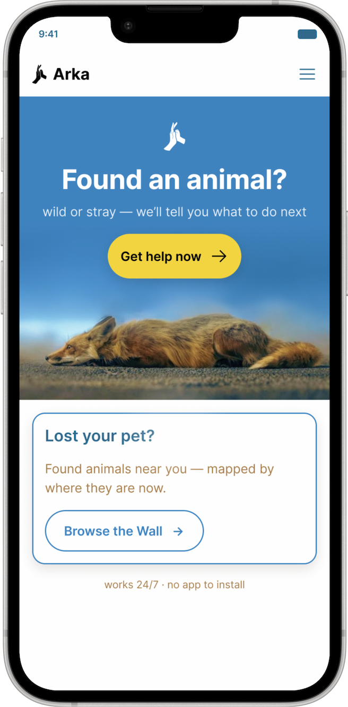
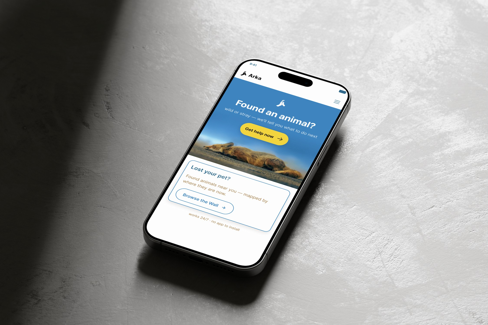
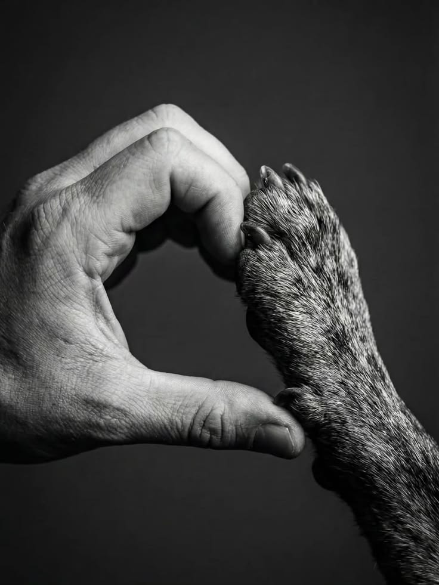
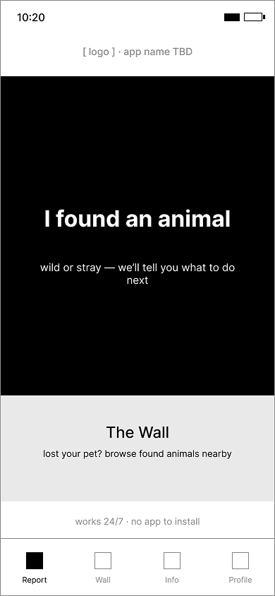
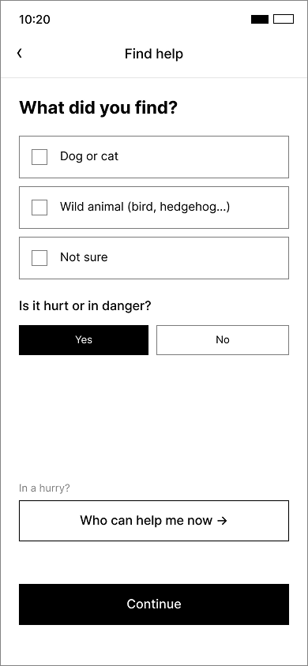
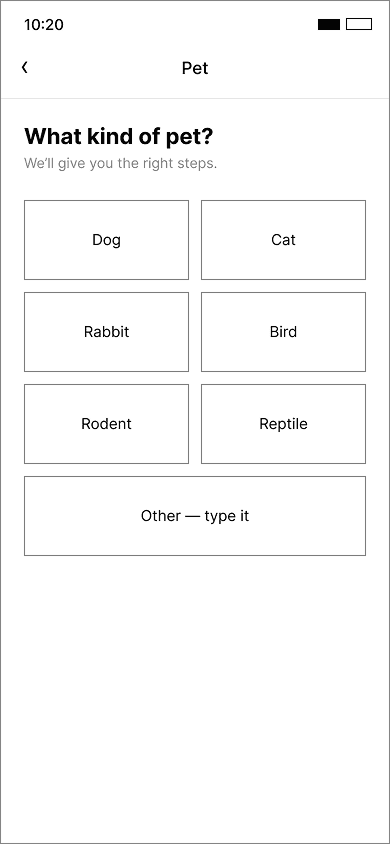
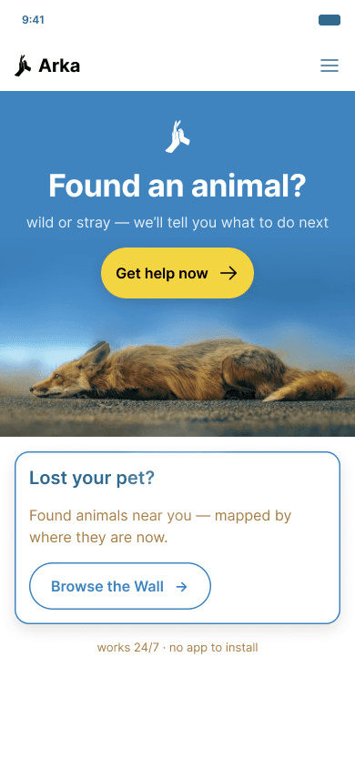

Arka
The undesigned edges of animal rescue.
A civic-coordination layer for people who find a stray or injured animal in Poland — triaging what they've found, routing them to a responder with real capacity, and closing the loop once the animal is safe.



Everything around the adoption match is left undesigned.
Shelters and rescue platforms pour their design energy into one moment: the adoption match. Everything around it is left undesigned — starting with the front door. When someone finds a stray, injured, or abandoned animal, they want to help but immediately hit a wall: which shelter? Municipal or private? Are they full? Who's responsible? Who pays?
Well-meaning people are left holding a frightened animal with nowhere to route it — and many simply give up, while the animals that need help most fall through the gaps between institutions.
The reporting-to-rescue chain is fragmented across phone numbers, Facebook groups, and overwhelmed organizations with no shared view of capacity.
How might I connect the person who finds an animal with the nearest responder who actually has capacity — turning a dead end into a clear, trackable path to rescue?
What success looks like — for both sides.
- Figure out what the animal is and whether it even needs intervention.
- Figure out who is responsible and reach someone with actual capacity.
- Get a clear, trackable next step — not be left holding the animal alone.
- Know how it ended (closure).
- Feel they did right by the animal, without needing an insider contact.
- ↑ Share of found-animal cases that reach a responder with capacity.
- ↓ Time from “found” to “routed to the right responder.”
- ↑ Correct-triage rate (owned → reunification, stray → rescue/foster, wild → rehab).
- ↓ % of finders who give up or default to keeping the animal.
- ↑ First-time, non-insider finders who complete the journey; ↑ reunification rate.
I didn't design from assumptions — I went and talked to people.
Finders, two vets, and a wildlife-rescue responder in Kraków, plus nearly twenty shelters and foundations contacted directly — including Schronisko na Paluchu (Warsaw's main municipal shelter) and the specialist clinic Lecznica Płocka.
What came out of it:
- The vet is the real front door — not because it's equipped to route a case, just because it's close and never turns anyone away.
- Every rescue that actually worked had one thing in common: one person who personally knew someone. Never the system itself.
- Some people avoid institutions on purpose, afraid of losing the animal to a shelter they don't trust — so support had to be decoupled from custody.
- Finders and the responder independently converged on the same fix, unprompted: verify by photo, walk a decision tree, point to a current map of centres.
Twelve players, five capabilities — nobody closed the loop.
I scanned 12 players across Poland, Germany, the UK, and the US against five capabilities — triage, city-specific routing, currency, capacity signal, and hand-off/closure. Three shaped the direction most.
- Human dispatcher, 24/7 · ~1,000 reports / ~4,000 calls a month.
- 11 of 16 voivodeships — but not Kraków.
- No self-service triage; no visible closure for the finder.
- Zero of 53 survey respondents had heard of it — awareness is as much the gap as capability.
- EU-funded lost/found listing app, push per municipality.
- Broadcasts a listing — doesn't route.
- No triage, no capacity signal, no closure.
- Self-service triage that guided 200,000+ people, with wildlife paths.
- No real-time capacity routing.
- Proves triage doesn't need a human dispatcher to scale.
No player, anywhere, combines self-service triage and live capacity and finder-side closure. That intersection is genuinely unoccupied.
Every note affinity-mapped bottom-up.
Every success story's unlock was one insider.
Dead numbers, city-specific routing nobody explains.
Proximity, not design.
69% keep or self-rehome by default.
Attaches at sighting, rarely discharges.
Fear of confiscation vs. underfunded, overloaded orgs.
Rescue is navigable only from the inside. The finder's first problems are triage and routing — and responsibility attaches at sighting with no way to discharge it.
Meet Kasia — the finder who becomes the system.
Kasia, 30
Warsaw · Office job, unrelated to animals
“The moment you find an animal, you don't know where to take it — the organizations are always full.”
- Who to call is different in every city; dead phone numbers.
- Institutions feel closed off, untrustworthy.
- Surprised she has to pay.
- Fears that calling anyone means losing the animal.
Under pressure, she turns to a vet first (an unpaid, accidental triage desk), sometimes acts on the wrong instinct, and defaults to absorbing the problem herself.
Tuesday evening. A frightened, collarless dog.
Sighting → Triage attempt → Searching for help → Vet (improvised front door) → Routing dead-end → Default absorption → Aftermath
- Low point (Stage 5): no shared capacity view, slow official channels, no insider to unlock a path.
- Only bright spot: the vet — itself improvised and unpaid.
- Ending: no closure, nothing learned by the system, her case invisible.
A triage-and-routing layer, reachable at the moment of need.
A web-based layer for anyone who finds an animal — reachable through Google or the vet's front desk, with no app to pre-install. It's a navigation layer only: not a rescue-capacity fix, not adoption matching, not the full wildlife chain, not foster tooling.
- Triage — must
- Routing — must
- Hand-off & closure — must
- Currency (“verified X ago”) — must
- Capacity signal — could
- Triages the animal, then routes to current, city-specific responders.
- Tracks the case to closure.
- Defaults to a radius-based owner search.
- Supports the finder without requiring surrender.
Home → Owner-check → First-action guidance → “Find it a place” → Routing list → Contact responder → Closure
Home → Triage: wild → Species picker → Species-specific guidance → Who can help now → Closure
Home → Triage → First-action guidance → “Keep it & find the owner” → Holding info → Create Wall post → Publish → Tracked until reunited
Designed for the feeling, not the plan.
Four lo-fi rounds in Figma — a 7-screen skeleton, a pure black/white/grey system that introduced “The Wall,” then two more rebuilt around what testing actually revealed. Interviews tell you what people think they'd do; watching them showed what they actually do — the hesitation, the wrong tap, the moment of relief.



Early lo-fi wireframes — round two's pure black/white/grey system, where “The Wall” first appeared.
People don't act the way they say they will — they're frightened, often guilty, just wanting to do right by the animal. So I designed for that feeling: calm, capable, and not alone. That's where the animal-details step came from, why location moved earlier, and why the vague “how it ended” screen became a clear “Your case” tracker. Only then did visual design go hi-fi: Inter, a 16-pt grid, rounded corners, a token-based colour system re-themeable from one place.
Arka.
Not from a blank whiteboard, but from watching the same story repeat — a vet standing in as an unpaid triage desk, one lucky insider contact making the difference, and finders who'd rather do nothing than risk losing an animal to a shelter they didn't trust.
Arka triages first and routes to current responders second, always leaving room to help without giving the animal up. Wild finds get their own path, so a fledgling and an injured dog are never treated the same. And instead of a “found” post disappearing into the wrong Facebook group, the Wall gathers them by radius — so an owner searching from where their pet went missing can find it, with every case trackable to an outcome.

The final hi-fi entry screen — “Found an animal?”, the moment of need.
A general LLM answers a question. Arka resolves a situation.
Finders don't get stuck identifying the animal — the part a model is genuinely good at. They get stuck on routing, capacity, trust, and closure: coordination problems, not knowledge problems. A chatbot can't hold local, current, verified state, or act as a shared board between a finder and a searching owner. Arka isn't competing with the model — it's the layer its advice would need to route into.
A navigation layer, not a rescue-capacity fix.
I started with three edges — A3 (stray reporting), A2 (foster burnout), A1 (returns) — and narrowed to A3 only. A2 was parked early (the burnt-out-foster population is nearly invisible to a survey); A1 stayed evidenced (44% of adopters returned or considered it) but never reached wireframes — real, researched, deliberately out of scope.
“Może tylko uspokoić znalazcę” — it can only calm the finder down.
The wildlife responder, on what a reporting system alone can doThe deeper constraint is state-level underfunding — no app resolves that. Arka's claim is narrow and honest: correct triage, current routing, a closed loop. Not the money behind it.
What I learned.
- Understanding the problem, genuinely — the survey and six interviews kept pointing at the same pattern from different angles until its real shape was impossible to miss.
- Reaching real people and organizations took real commitment.
- One coherent flow had to serve both a lost dog and an injured bird.
- Some stories were genuinely heart-breaking, and stayed with me.
- The problem kept getting bigger the more I researched it.
- Trust the research to overturn my first instincts sooner — the shelter as “front door,” the first-30-days assumption, and “a directory fixes routing” all turned out wrong.
What started as a project about lost dogs turned into a project about trust — rescue only really works if you already know someone on the inside. Arka is my attempt at closing that gap.
Good intentions deserve better directions.The prototype, end to end.
From “found an animal” to a closed case — a full pass through the final prototype.
Prototype recording — reporting a found stray, from triage to a closed case. Plays silently.